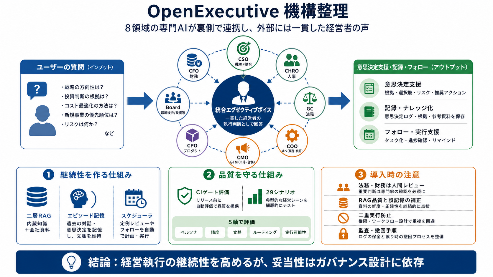

SenteLabsAI/OpenExecutive: AI-powered virtual executive team — a single coherent executive persona backed by 8 specialist Claude agents (FastAPI + Next.js).
Initial source page

Executive voice, multi-agent
8領域の専門AIが裏側で連携し、ユーザーには一貫した「経営者の執行ボイス」として意思決定支援を返す。
Why this matters
経営判断は「質問→調査→検討→記録→フォロー」までが連続するのに、AIは単発回答で終わりがちだ。
One voice, many experts
内部は8専門エージェントが並列で検討し、外部には「統一された経営者の声」として提示する。
Know the world, know your company
RAGは「内蔵（MBA級）知識」と「アップロード会社資料」の2層で根拠を組み立てる。
Keep the thread
意思決定・施策の要点をSQLiteに要約保存し、次回の会話冒頭（past_decisions）で反映する。
※誤り要約が蓄積し得る点は、入力だけでは抑制メカニズムが不透明。
Deadline → action
期限付きタスクを扱い、UPDATE…RETURNINGでアクションを回収して実行を促す。
Guard rails via evals
29シナリオをLLM-as-judgeでスコアリングし、主要5次元で平均3.5/5を下回ると失敗する。
マルチエージェントは劣化が見えにくいことがあるため、退行検知は実務的な強み。
Flexible deployment
Web UIに加え、Slack/メール/Telegram/Google Chat/Discord/CLIなどで利用可能。ローカルのOpenAI互換サーバにも切替できる。
What the source doesn’t fully say
入力情報からは、法的責任の所在・RAG検索品質・誤記憶の補正・モデル安全性/バイアス評価が十分に読み取れない。
結論：導入はガバナンスと裏取り（監査・専門家レビュー）を前提にする必要がある。
My take: strong and usable
OpenExecutiveは「質問に答えるAI」から「継続的な執行チーム」へ近づける構想に説得力がある。
Risks: where to be careful
法的・財務など影響の大きい領域で、AIの誤りをどう抑えるか（監査・撤回・検証）が鍵になる。
エピソード記憶は便利だが、要約誤りや前提変化を補正しないと「誤った継続」になる可能性がある。
Bottom line
強みを活かすには、資料粒度・検証/監査・スケジューラ/記憶の挙動テスト・停止/修正手順までを運用に織り込む。
結論：OpenExecutiveは「経営執行の継続性」を狙う一方、最終的な妥当性はガバナンスに依存する。
Initial source page
Simple systems take 2-4 weeks from concept to production with frameworks like CrewAI. Complex enterprise implementations…
##### Latest posts ### Related topics ©2026 Cognizant, all rights reserved [...] The strength of a multi-agent system …
that the agents communicate with each other not through some shared state but rather through the tool call parameters we…
Refer to caption [...] Refer to caption [...] agents focus on the active system state, upgrade scheduler agents manage v…